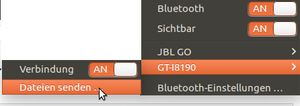

Einrichtung
Dieser Artikel wurde für die folgenden Ubuntu-Versionen getestet:
Ubuntu 16.04 Xenial Xerus
Zum Verständnis dieses Artikels sind folgende Seiten hilfreich:
Bluetooth ist eine Nahfeld-Funktechnik, die meist zur Kommunikation mit tragbaren Geräten wie z.B. Mobiltelefonen dient. Auch externe Peripheriegeräte wie Tastaturen, Zeigegeräte (Computer-Mäuse), Kopfhörer mit Mikrofon (Headsets) oder normale Kopfhörer können angebunden werden. Die notwendige Funkschnittstelle ist bei diesen Geräten bereits eingebaut. Beim Computer lässt sie sich via USB (Bluetooth-Dongle) nachrüsten, falls nicht bereits vorhanden.
Bei einer Standardinstallation von Ubuntu ist Bluetooth bereits über das Benachrichtigungsfeld im Panel installiert. Dieser Artikel gibt Hinweise, wie man das bei anderen Desktop-Umgebungen nachholt. In dieser Anleitung geht es nur um die grundsätzliche Einrichtung der Verbindung. Einzelne Anwendungen werden in separaten Artikeln besprochen.
Installation¶
Folgende Pakete müssen für ein korrektes Funktionieren von Bluetooth installiert sein [1]:
Ubuntu 16.04, Unity und 64-Bit-Architektur¶
Gültig für Ubuntu 16.04 und der unter GUI Unity in der 64-Bit-Architektur.
Nachfolgende Programme sind grundsätzlich in der Standardinstallation enthalten
bluez
bluez-cups
bluez-obexd
gnome-bluetooth
indicator-bluetooth
libbluetooth3:amd64
libgnome-bluetooth13:amd64
pulseaudio-module-bluetooth
 mit apturl
mit apturl
Paketliste zum Kopieren:
sudo apt-get install bluez bluez-cups bluez-obexd gnome-bluetooth indicator-bluetooth libbluetooth3:amd64 libgnome-bluetooth13:amd64 pulseaudio-module-bluetooth
sudo aptitude install bluez bluez-cups bluez-obexd gnome-bluetooth indicator-bluetooth libbluetooth3:amd64 libgnome-bluetooth13:amd64 pulseaudio-module-bluetooth
Ubuntu 16.04, LXDE und 32-Bit-Architektur¶
zur Nutzung der GUI LXDE in der 32-Bit-Architektur.
Nachfolgende Programme sind grundsätzlich in der Standardinstallation enthalten
blueman
bluez
bluez-obexd
libbluetooth3:i386
mit apturl
Paketliste zum Kopieren:
sudo apt-get install blueman bluez bluez-obexd libbluetooth3:i386
sudo aptitude install blueman bluez bluez-obexd libbluetooth3:i386
Zur Nutzung der GUI unter Xfce
blueman (universe)
mit apturl
Paketliste zum Kopieren:
sudo apt-get install blueman
sudo aptitude install blueman
Prüfung¶
Vereinzelt werden USB-Sticks vom Computer nicht erkannt oder interne Funkschnittstellen sind defekt. Im Terminal [3] kann mit dem Befehl
lsusb | grep Bluetooth
festgestellt werden, ob Bluetooth-Geräte am USB-Bus vorhanden sind. Dabei werden auch nähere Informationen zum Gerät angezeigt. Zum Beispiel sieht die Ausgabe der betreffenden Zeile so aus:
Bus 003 Device 004: ID 1310:0001 Roper Class 1 Bluetooth Dongle
Treiber¶
Gelegentlich fehlt auch der geeignete Treiber, siehe dazu Linux-backports-modules. Möglicherweise fehlt aber auch nur die Firmware.
Konfiguration¶
Nach der Installation muss der Bluetooth-Dienst evtl. neu gestartet werden. Dies geschieht im Terminal [3] mit dem Befehl
sudo service bluetooth restart
bzw. mit
sudo /etc/init.d/bluetooth restart
Sind die benötigten Pakete installiert, wird beim Einstecken des Bluetooth-Dongles normalerweise automatisch das hcid (Host Controller Interface Device) gestartet. Dieses dient als Schnittstelle zum Bluetooth-Gerät. Informationen über das Bluetooth-Gerät erhält man mit dem Befehl:
hciconfig --all
Die Option --all sorgt dabei für eine erweiterte Informationsausgabe. Zum Beispiel sieht die Ausgabe so aus:
hci0: Type: USB
BD Address: 00:0B:0D:33:8E:12 ACL MTU: 120:20 SCO MTU: 64:0
UP RUNNING PSCAN ISCAN
RX bytes:834 acl:21 sco:0 events:51 errors:0
TX bytes:2926 acl:39 sco:0 commands:18 errors:0
Features: 0xff 0xff 0x05 0x38 0x18 0x18 0x00 0x00
Packet type: DM1 DM3 DM5 DH1 DH3 DH5 HV1 HV2 HV3
Link policy: RSWITCH HOLD SNIFF PARK
Link mode: SLAVE ACCEPT
Name: 'konidesktop-0'
Class: 0x100100
Service Classes:
Device Class: Computer, Uncategorized
HCI Ver: 1.2 (0x2) HCI Rev: 0x0 LMP Ver: 1.2 (0x2) LMP Subver: 0x757
Manufacturer: Silicon Wave (11)Von besonderem Interesse sind hier die BD-Hardware-Adresse in der zweiten Zeile sowie der Name und die Klasse (Class). Der Name wird automatisch vergeben und ist mit dem Namen des Computers identisch (bis auf das angehängte -0). Die Klasse gibt an, welche Geräteart mit diesem Bluetooth-Anschluss verbunden ist.
Wenn der Gerätename nicht angezeigt wird oder geändert werden soll, kann das mit folgendem Befehl leicht gemacht werden:
hciconfig hci0 NAME NEUER_NAME
Dabei steht in diesem Beispiel hci0 für ein Bluetooth-Gerät, das mit dem Befehl hciconfig angezeigt wurde.
Verbindung mit dem Mobiltelefon¶
Beim Mobiltelefon muss man nun die Bluetooth-Menüpunkte durchgehen - diese sind bei jedem Gerät woanders untergebracht. Besonders wichtig ist, dass es auf "Sichtbar" eingestellt wird. Außerdem kann ein Name vergeben werden, der nachher bei der Verbindung angezeigt wird. Bei einigen Telefonen kann man sich auch die verfügbaren Dienste anzeigen lassen.
Wenn man diese Einstellungen vorgenommen hat und Bluetooth am Mobilgerät eingeschaltet ist, kann man am Computer im Terminal mit dem folgenden Befehl nach verfügbaren Mobilgeräten suchen:
hcitool scan
Nun werden alle gefundenen Geräte (außer dem PC, der die Anfrage gestartet hat) mit ihrer Hardware-Adresse und dem Namen angezeigt. Das sieht beispielsweise so aus:
Scanning ...
00:0E:07:73:3C:B1 K700iDie Hardware-Adresse des Mobilgerätes ist dementsprechend eine andere als die des USB-Dongles.
Pairing¶
Der Begriff Pairing (Paarung) bezeichnet die (permanente) Bindung zweier Geräte aneinander. Bei Verbindungen über Bluetooth oder andere Funktechniken ist es sehr sinnvoll, wenn sich die Geräte bei jeder Verbindung automatisch identifizieren. Damit zwei Geräte aneinander gebunden werden können, müssen sie zunächst einander bekannt gemacht werden. Dies geschieht bei Bluetooth-Verbindungen durch eine gemeinsame PIN. Diese Nummer muss bei der ersten Kontaktaufnahme auf allen beteiligten Geräten kurz nacheinander eingegeben werden. Je nach Anwendung kann eine PIN auch zufällig ausgewählt werden.
Sollte das Pairing fehlschlagen (Fehlermeldung des Mobiltelefons und es erscheint kein Fenster für den Schlüssel auf dem Desktop), so muss man unter GNOME bzw. Xfce ggf. das Bluetooth-Applet von Hand starten:
bluetooth-applet
Wenn das Pairing von einem Rechner mit der GUI Unity eingeleitet wird, muss im Mobiltelefon in der Einstellung Bluetooth der Unter-Menüpunkt "sichtbar" aktiv sein.
Im rechten Teil des Unity-Panel ist das Bluetooth- Symbol zu sehen. Nach dem Anklicken öffnet ein Fenster. In der untersten Zeile dieses Fenster muss das Feld "Bluetooth-Einstellungen..." aktiviert werden.
Ein weiteres Fenster namens "Bluetooth" wird geöffnet. Im unteren rechten Teil befindet sich der Button + . Wird dieser Button betätigt, geht das Fenster "Suchen nach Geräten" auf, Im Feld Geräte erscheint das gefundene Mobiltelefon. Diese Zeile muss angeklickt werden und der Button "weiter" ist aktiviert. In der Default-Einstellung wird eine PIN automatisch generiert. Mit Betätigen des Buttons "weiter" wird diese sowohl auf dem Rechner als auch im Mobiltelefon angezeigt und muss auf beiden Geräten bestätigt werden.
Dual-Boot System¶
Möchte man auf einem Dual-Boot System ein Bluetooth-Gerät verwenden, muss das Pairing üblicherweise beim Wechsel des Betriebssystems jedes Mal erneut durchgeführt werden. Das liegt daran, dass während des Pairings ein zufälliger Schlüssel generiert wird, der zusätzlich zur BD-Hardware-Adresse für die Authentifizierung notwendig ist. Um ein erneutes Pairing zu vermeiden, muss der Schlüssel auf dem System auslesen werden, bei dem das letzte Pairing durchgeführt wurde, und dieser in der entsprechenden Datei eintragen werden. Das Bluetooth-Gerät selbst merkt sich normalerweise nur die BD-Hardware-Adresse, den Rechnernamen und den dazugehörigen Schlüssel des letzten erfolgreichen Pairings.
Unter Linux werden die Daten unterhalb des Verzeichnis /var/lib/bluetooth/XX:XX:XX:XX:XX:XX gespeichert. Dabei ist XX:XX:XX:XX:XX:XX die BD-Hardware-Adresse des Bluetooth-Empfängers am eigenen Rechner. Je Bluetooth-Gerät ist ein weiteres Unterverzeichnis YY:YY:YY:YY:YY vorhanden, darin befindet sich eine Datei info.
Beispiel Verzeichnisstruktur mit zwei Bluetooth-Geräten:
root@z1:/var/lib/bluetooth# tree
.
└── 30:3A:64:14:F0:72
├── 34:23:87:F9:05:48
│ └── info
├── cache
│ ├── 00:02:5B:01:70:F7
│ ├── 34:23:87:F9:05:48
│ └── FC:58:FA:20:CA:B8
├── FC:58:FA:20:CA:B8
│ ├── info
│ └── info.OLD
└── settingsAufbau einer info-Datei:
[General] Name=BM-8810 Class=0x240404 SupportedTechnologies=BR/EDR; Trusted=true Blocked=false Services=<some-cryptic-stuff>; [LinkKey] Key=F4607551C779CE738DD85C1062213F05 Type=4 PINLength=
Die richtige info-Datei findet man, wenn man
die Mac-Adresse kennt, daraus ergibt sich der Verzeichnisname
sich am Inhalt der Angabe von [General].Name orientiert
zur Not das das Datum der info-Datei betrachtet, sie wird zum pairing-Zeitpunkt erstellt.
Konkretes Vorgehen:
Linux booten, Gerät unter Linux pairen
Windows booten, Gerät unter Windows pairen
Unter Windows den Key-Wert für die LinkKey-Angabe aus der Registry auslesen
Linux booten, in der passenden Info-Datei den Key ändern, reboot
Eine kurze Anleitung für den Austausch des Schlüssels für ein Windows/Linux Dual-Boot-System findet man unter How to use bluetooth devices under two different operation systems?  .
.
Deaktivierung beim Start mit systemd¶
Die Deaktivierung erfolgt über ein systemd-Service anlegen. Dazu sollte die Datei /lib/systemd/system/disablebluetooth.service mit folgendem Inhalt erstellt werden:
######################################################################### # # disablebluetooth.service # systemd service: disable bluetooth at start # ######################################################################### [Unit] Description=Disable Bluetooth [Service] Type=oneshot ExecStart=/usr/sbin/rfkill block bluetooth [Install] WantedBy=multi-user.target # EOF
Dieser Service muss danach noch aktiviert werden.
sudo systemctl enable disablebluetooth.service
Konfigurationsdateien¶
Mit der Installation bluez werden unter /etc/bluetooth/ verschiedene Konfigurationsdateien angelegt. Bei Ubuntu 16.04 sind Änderungen in der Datei rfcomm.conf.dpkg-remove notwendig, wenn dieses Merkmal genutzt werden soll. Dazu benötigt man Root-Rechte.
main.conf¶
Die Datei /etc/bluetooth/main.conf ist Ubuntu 16.04 und der unter GUI Unity vorhanden aber komplett auskommentiert.
rfcomm.conf.dpkg-remove¶
Einige Programme benötigen zur Kommunikation eine serielle Schnittstelle. Diese wird bei Bluetooth mit rfcomm zur Verfügung gestellt. Damit lassen sich dem Mobiltelefon Modembefehle senden. Dies wird z.B. benötigt, wenn man den Akkustand abfragen oder über GPRS ins Internet gehen will. Bei der Einrichtung wird das Mobilgerät mittels seiner Hardwareadresse an ein rfcomm-device gebunden. Evtl. muss dabei auch ein Kanal angegeben werden. Wie dies genau funktioniert, wird in der jeweiligen Anleitung für die entsprechende Software erklärt.
Die Datei rfcomm.conf.dpkg-remove enthält diejenigen rfcomm-devices, die beim Systemstart schon eingerichtet werden sollen. Ein recht gutes Beispiel ist bereits in der Datei gegeben.
Nähere Informationen zum Umgang mit rfcomm sind in der rfcomm-manpage erhältlich.
Datenübertragung¶
Dateien vom PC zum Mobiltelefon¶
 Das Bluetooth-Symbol im Panel anklicken.
Wenn die Einstellung dem Bild entspricht und das Bluetooth-Symbol um ein Schloss- Symbol erweitert ist, besteht die Verbindung zum Mobiltelefon.
Auf das Feld "Dateien senden..." (siehe Mauszeiger im Bild) klicken und es öffnet das Fenster mit den Namen "Bluetooth-Datenübertragung". In diesem Fenster kann zwischen suchen (Lupensymbol), Abbrechen und Auswahl gewählt werden. Ist die zu sendende Datei gefunden und markiert, wird die Übertragung mit dem betätigen des Button Auswahl eingeleitet. Die Annahme am Mobiltelefon muss bestätigt werden. Bei einem Samsung GT-I8190 wird die Datei im Ordner Bluetooth abgelegt.
Dateien vom Mobiltelefon zum PC¶
Hinweis:
Im Artikel zu GNOME-Bluetooth unter der Überschrift Dateien an den PC und im Artikel zu gnome-user-share unter der Überschrift Dateien über Bluetooth empfangen sind die Abschnitte für Ubuntu 16.04 getestet.
Auf der Seite "Persönliche Dateifreigabe" sind zwei Haken, wie im Wiki "Dateien über Bluetooth empfangen" beschrieben, zu setzen. Diese Seite erreicht man in der GUI Unity über die 1. Schaltfläche "Rechner durchsuchen" und gibt dort "per" ein.
Dienste¶
SDP (Service Discovery Protocol) dient zur Abfrage der auf dem entfernten Gerät verfügbaren Dienste (Bluetooth Profile). Welche Dienste das Gerät anbietet, lässt sich mit dem Befehl
sdptool browse
auslesen. Verwendet man mehrere Bluetooth-Geräte, gibt man nach dem Befehl und einem Leerzeichen noch die Hardware-Adresse des gewünschten Gerätes an. Ansonsten werden alle Geräte ausgelesen. Die Liste kann unter Umständen recht lang sein und einige Dienste enthalten. Hier wird exemplarisch einer herausgegriffen:
Service Name: OBEX File Transfer
Service RecHandle: 0x1000d
Service Class ID List:
"OBEX File Transfer" (0x1106)
Protocol Descriptor List:
"L2CAP" (0x0100)
"RFCOMM" (0x0003)
Channel: 7
"OBEX" (0x0008)
Profile Descriptor List:
"OBEX File Transfer" (0x1106)
Version: 0x0100Wichtig sind hier der Name des Dienstes und der Kanal, über den er läuft. Jeder Dienst läuft über einen anderen Kanal und bietet eine andere Funktion an. Der hier aufgeführte OBEX File Transfer ist für das "Herunterladen" von Dateien vom Mobiltelefon zuständig. Dies kann entweder per Kommandozeile oder mit einem Programm wie KDEBluetooth geschehen. Dabei wird oft der Kanal 7 verwendet, möglich ist aber z.B. auch Kanal 11 bei Geräten der eSerie von Nokia.
Anwendungen¶
Es gibt zahlreiche Programme, die Kommunikation, Datenaustausch, Synchronisation und mehr zwischen mobilen Geräten und dem Rechner über die Bluetooth-Schnittstelle ermöglichen. Diese sind im Artikel Anwendungen für Mobilgeräte zusammengefasst. Auch stationäre Computer können per Bluetooth verbunden werden.
Problembehebung¶
Firmware fehlt¶
Manche Broadcom-Bluetooth-Geräte benötigen eine spezielle Firmware, die aus Lizenzgründen nicht von Ubuntu direkt ausgeliefert werden darf. Dies äußert sich meist darin, dass Bluetooth zwar aktiviert werden kann, aber keine Geräte gefunden werden. Sicher feststellen lässt sich das Problem durch den Aufruf von:
dmesg | grep bluetooth
Fehlt die Firmware, so taucht in der Ausgabe in etwa diese Zeile auf:
[ 12.314809] bluetooth hci0: Direct firmware load for brcm/BCM43142A0-04ca-2009.hcd failed with error -2
oder
[ 12.314809] bluetooth hci0: Direct firmware load for brcm/BCM.hcd failed with error -2
In ersten Fall fehlt die Firmware BCM43142A0-04ca-2009.hcd für das Gerät mit der ID 04ca:2009. Wird wie im zweiten Fall lediglich das Fehlen der Firmware brcm/BCM.hcd bemängelt, so muss die ID noch ermittelt werden.
Die benötigte Datei lädt man aus diesem Sammelrepository herunter und platziert sie unter /lib/firmware/brcm. Dabei muss man die Datei ggf. umbenennen, so dass sie dem Namen in der obigen Meldung entspricht. Dies könnte in unserem zweiten Beispiel so aussehen:
sudo mv ~/Downloads/BCM43142A0-04ca-2009.hcd /lib/firmware/brcm/BCM.hcd
Nach einem Neustart sollte das Bluetooth-Gerät nun korrekt funktionieren.
Sollte die passende Firmware noch nicht im Sammelrepository zu finden sein, so lässt sie sich aus dem vom Hersteller bereitgestellten Windows-Treiber extrahieren (Details dazu auf Github und in diesem Bug).
Verzögerte/stockende Tonausgabe¶
Hat man über Bluetooth-Kopfhörer Verzögerungen in der Tonausgabe oder läuft diese stockend, so hängt dies oft mit der A2DP-Implementierung zusammen und wie diese den Ton vor der Kodierung puffert.
Wenn die Tonqualität keine Rolle spielt (z.B. bei Telefonaten), kann man das Profil von A2DP auf HSP/HFP umstellen. Die Einstellung findet man in den Systemeinstellungen unter "Klang -> Ausgabe -> Profil".
Mitunter kann es aber auch Abhilfe schaffen, die A2DP-Latenz zu verändern. Die nötigen Informationen ermittelt man mit dem Befehl:
pactl list | grep -Pzo '.*bluez_card(.*\n)*'
Die Ausgabe sollte ungefähr so aussehen:
Name: bluez_card.00_11_67_AD_2E_6C … Ports: headset-output: Freisprecheinrichtung (priority: 0, latency offset: 0 usec) Teil der/des Profil(s): headset_head_unit, a2dp_sink headset-input: Freisprecheinrichtung (priority: 0, latency offset: 0 usec) Teil der/des Profil(s): headset_head_unit
Gebraucht werden daraus im folgenden Befehl der Name der Karte und der Port der Ausgabe (hier bluez_card.00_11_67_AD_2E_6C und headset-output). Erkennbar ist auch, dass keine Latenz (latency offset) eingestellt ist. Dies konfiguriert man nun mit dem Befehl:
pactl set-port-latency-offset <karte> <port> 100000
Die Zahl hinten ist die Latenz, angegeben in Mikrosekunden (Millionstel Sekunden), in diesem Fall also 100ms. Abhängig von der Bluetooth-Karte muss der Wert mitunter angepasst werden. Stockt der Ton, muss der Wert größer sein, ist die Verzögerung zu groß, verringert man den Wert.
Headset wird nicht automatisch aktiviert¶
Schaltet man ein Bluetooth-Headset ein, so möchte man nicht nur automatisches Pairing, sondern im Regelfall auch automatisch die Umstellung der Soundausgabe auf das Headset. Dies muss leider manuell erfolgen. Wird PulseAudio verwendet, so genügt es in der Datei /etc/pulse/default.pa die folgende Zeile zu ergänzen:
1 | load-module module-switch-on-connect |
Siehe auch Autoconnecting to bluetooth device on startup and autochanging audio output .
Links¶
Bluetooth-Konfiguration im Terminal mit bluetoothctl auf dem Raspberry Pi
 – kofler.info
– kofler.infoDatenaustausch mit ObexFTP und der Bash
– Artikel LinuxUser 08/2006Telefonauskunft
– Artikel LinuxUser 07/2005Telefonflirt
– Artikel LinuxUser 01/2005https://emanuelduss.ch/2013/02/befehle-beim-systemstart-ausfuhren-unter-arch-linux-mit-systemd/
- Erstellt mit Inyoka
-
 2004 – 2017 ubuntuusers.de • Einige Rechte vorbehalten
2004 – 2017 ubuntuusers.de • Einige Rechte vorbehalten
Lizenz • Kontakt • Datenschutz • Impressum • Serverstatus -
Serverhousing gespendet von